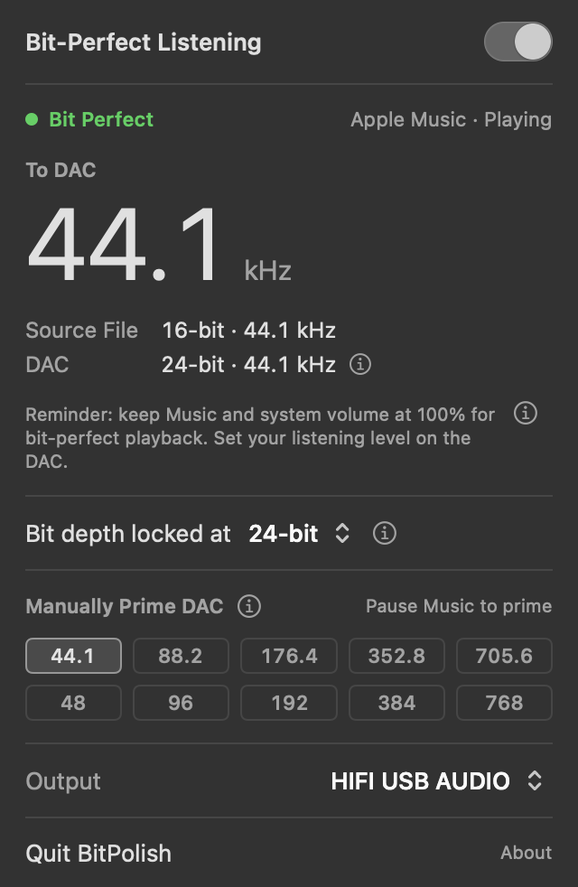

Mac app
BitPolish
Bit-perfect playback for Apple Music and your local library. Keep the app you love. BitPolish adds the one thing it cannot do: it sets your DAC to each track's sample rate, locks the bit depth, and puts everything back when you are done.
For people who love Apple Music, own their music, and care how it sounds
You have a local library of high-resolution files, and you play them in Apple Music. You like it: your library, your playlists, one app. You also have the hardware to hear the difference: great headphones or speakers, a very good DAC, a system built to give you the best the music can offer.
Here is the catch. Apple Music plays everything at whatever sample rate your Mac's output is already set to. Play a 96 kHz file while the output is set to 44.1, and macOS resamples the music before it reaches your DAC. Music never changes the DAC's rate itself. The best DAC in the world can only play what the Mac sends it.
You should not have to leave an app you love for one missing feature. Fortunately, there is BitPolish. It sets your DAC to each track's sample rate and locks the bit depth, so the music reaches your hardware the way the file was made.
The trade is small. Changing sample rate takes the DAC a moment, about a second on some hardware, so a track at a new rate begins after a short gap. If you know what plays next, Manually Prime DAC removes the gap: you set the rate while nothing is playing.
The panel shows what is happening in plain terms: the rate going to the DAC, the file it came from, and a clear orange Resampled when something in the chain cannot carry a track as it is.

What it does
- Follows each track
- Sets the DAC to the rate of whatever Apple Music is playing, for Apple Lossless, AAC and MP3.
- Locks the bit depth
- 24-bit by default, the most optical and coax can carry. A DAC that takes more over USB can be set to its maximum.
- Manually Prime DAC
- Switching rates takes the DAC a moment, and you hear a short gap before a track at a new rate begins. Priming removes it. Pause, choose the next track's rate, press play: the DAC switches while nothing is playing, so the track starts clean.
- Tells you the truth
- An asterisk beside the rate in the menu bar means playback is not bit-perfect right now, because the volume is below 100% or your DAC refuses the rate. Rates your DAC will not take are faded.
- Restores everything
- Before it touches your DAC, BitPolish saves its format. Switch off, quit, relaunch after a crash or replug the DAC, and it goes back exactly as it was. BitPolish never changes volume.
- Never surprises your speakers
- If BitPolish moved your sound to the DAC, it stays there until you click Return, so nothing suddenly plays out loud.
- Leave it on, or not
- Open at login, keep Bit-Perfect Listening on and Show in Dock are one click away. By default it does none of them.
- Stays current
- It checks for updates once a day while it is running, and nothing runs when it is not.
Built for listening sessions
You sit down with your music, switch BitPolish on, listen, and switch it off when you are done. Everything in the app follows from that.
Think of it like a drive. BitPolish keeps the car in gear the whole way. When the next track needs a different sample rate, it shifts for you, like an automatic transmission. Shifting takes the DAC a moment, so you hear a short gap before that track begins.
Manually Prime DAC is how you shift ahead of time. It is a row of rate buttons in BitPolish's panel. Between tracks, pause Music, click the sample rate of the track you are about to play, then press play. (Get Info in Music shows each file's rate.) The DAC changes gear while nothing is playing, so the track starts with no gap. You never have to use it. It is there for the tracks where the gap would bother you.
When you pause, the car stays in gear, so pressing play picks up where you left off. When the session ends, BitPolish steps aside.
- Asks for nothing. No permission prompts of any kind: no AppleScript, Accessibility, audio recording or Media Library access. It reads Music's own log, its track-change notifications and the system's open-file table.
- Hands off when off. While it is off, it reads and changes nothing.
- Small on purpose. No Dock icon and no login item unless you choose them. Quit it and nothing stays behind.
- External DACs only. Built-in output, Bluetooth, AirPlay and virtual devices are refused, because they cannot be bit-perfect.
Tested, not assumed
"Bit-perfect" is easy to claim. A DAC's rate light proves the rate arrived, but the rate stays the same even when the samples are altered. So the samples themselves were measured.
Music's output was captured on its way to the DAC and compared sample by sample with the file. The result was bit-exact, with a gain of exactly 1.000000 and the full spectrum present. That held even when Music was launched at a different rate than the DAC, a long-standing claim that did not hold on macOS 27.0.1. The capture method was validated first against a known-clean source.
Restore safety got the same treatment: switching on and off, force-quitting while on, unplugging the DAC mid-session, and another app changing the device behind BitPolish's back. The DAC came back to its original format every time.
Read the full method and results, and repeat the tests on your own Mac and DAC.
Know your chain
A track arrives bit-perfect only if every link can carry it: the Mac, any adapter, the cable and the DAC's input. A few things worth knowing:
- Optical and coax carry at most 24 bits, so choosing 32-bit over those gains nothing.
- An adapter can advertise rates its output cannot send. Look up the adapter's output spec, not its USB spec.
- Some optical cables drop out at 176.4 or 192 kHz. It can take more than one cable to find one that holds.
The full guide is on GitHub, including a quick test of your whole chain.
Requirements and limits
- A Mac with Apple Silicon and macOS 14 Sonoma or later.
- An administrator account, to follow rates. On a standard account the bit-depth lock still works, and BitPolish says so.
- Apple Music only. Audirvana and Roon are great players that manage the DAC themselves. If you are happy in one of them, you do not need BitPolish.
- Apple Music shares the output, so other apps' sounds mix in. Close other audio sources while you listen.
- Changing rate takes the DAC about a second on some hardware, so a track at a new rate begins after a short gap, and its first instant can be resampled. Manually Prime DAC avoids both.
- AIFF and WAV files are not detected yet.
Download
BitPolish will be a free download, signed and notarized by Apple, from the project's GitHub page. Its source is there too, under the MIT License.